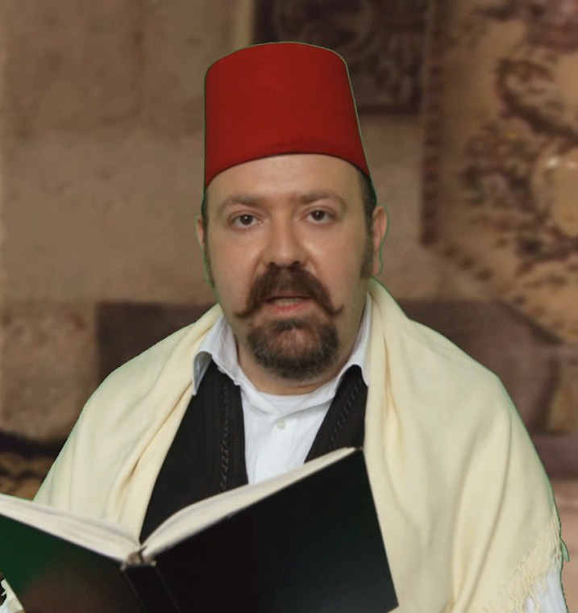
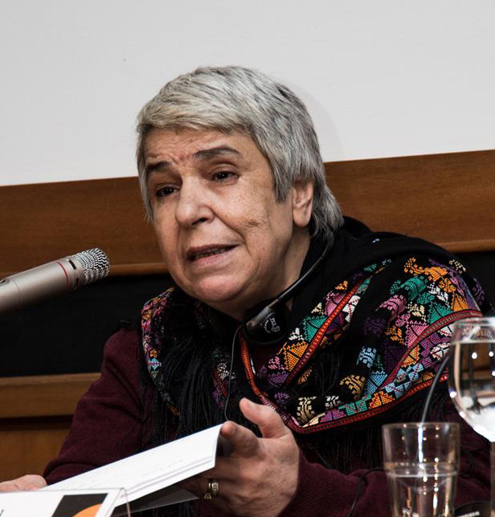
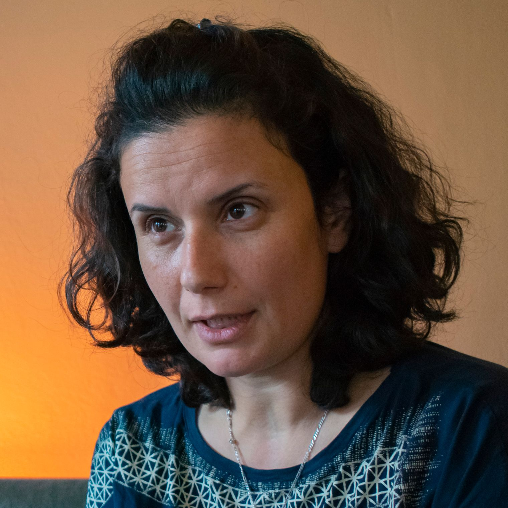
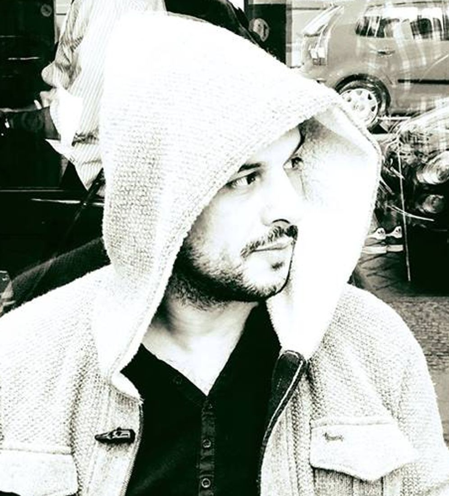
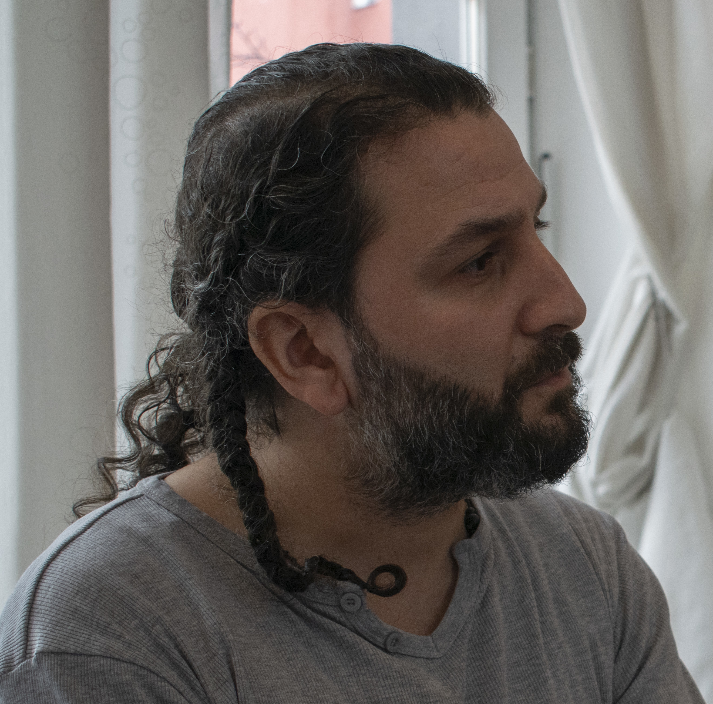

Bassam Dawood Hakawati  “He de recollir aquestes històries perquè en el futur es pugui saber què va passar a Síria realment”
Bilal Malek Al-Shami Dibuixant “Utilitzàvem colors i el grafiti per fer la ciutat de Daraya més maca, malgrat la devastació”
Nemat Khaled Escriptora i periodista  “A Síria, em protegia a mi mateixa abans d’escriure qualsevol cosa”
Kefah Ali Deeb Pintora i escriptora  “L’únic que vull dir amb el meu art és que sóc una persona lliure”
Khaled Barakeh Artista conceptual  “La cultura siriana m’ha fet qui soc, però és una cultura que ja no em representa”
Anwar Al-Atrash Pintor  “Amb les meves obres vull que les persones canviïn els seus pensaments negatius”